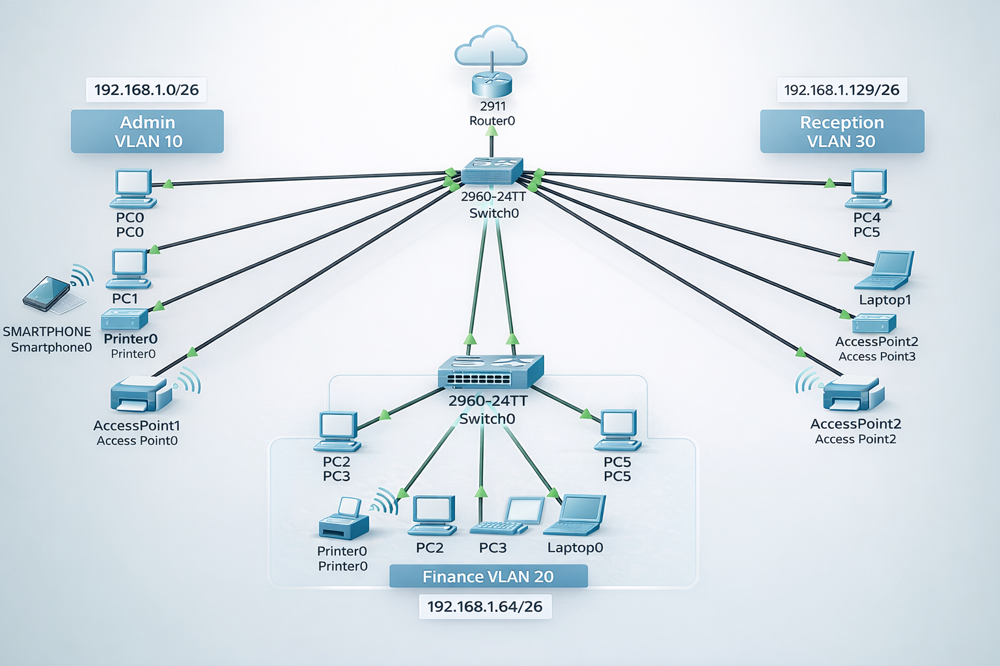
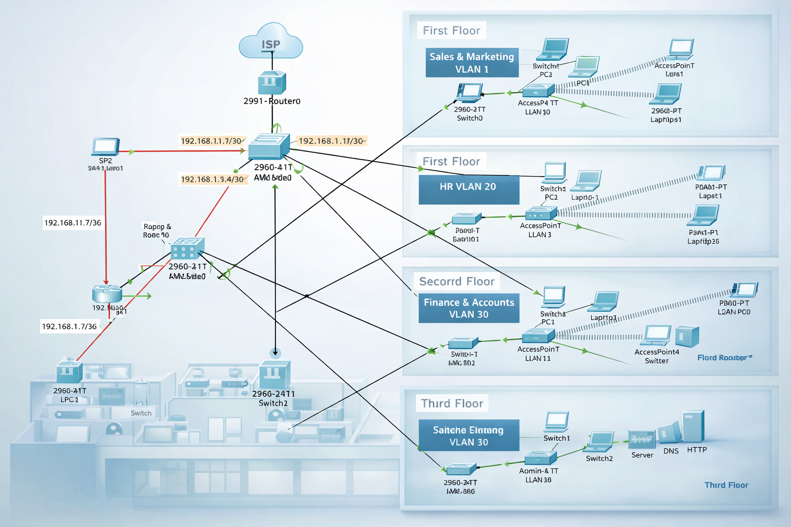

Thato Maputla
Network Engineer | Cisco certified
Network Engineer | Cisco certified
Cisco Certified IT professional with substantial skills in network design, system support, and programming. Proficient in server setup, VLANs, DHCP, inter-VLAN routing, and network connectivity problems, as well as programming using PHP, MySQL, and Python. Possess a diverse skill set that combines both software and network skills. Currently focusing on progressing in network engineering with hands-on experience in designing branch office networks using Cisco Packet Tracer to create secure, scalable, and efficient networks.
Cisco routing and switching, inter-VLAN routing, DHCP, Dynamic IPv4 allocation, Subnetting, CLI configuration, trunking, LAN / WAN networking, TCP/IP networking, VPN, SD-WAN, C#, HTML, Python, JavaScript, and PHP
My professional journey in IT and networking.
Here are two networking projects I created using Cisco Packet Tracer.

A small office/home office network featuring a router, switch, and wireless setup. Includes DHCP, subnetting and connectivity configuration.
⬇ Download Packet Tracer File
Hierarchical, VLAN-segmented, and redundant enterprise network design for a 3-floor trading floor, including OSPF, DHCP, wireless access, and server integration using Cisco Packet Tracer.
⬇ Download Packet Tracer File